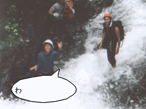
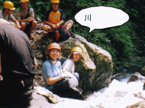
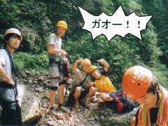

北沢登り | ２０００年７月２日 |
|  | 沢登りに参加した斉藤（シュガー）さんから ７／２（日）は天気は快晴。北沢の沢登りを行うにはもってこいであった。 メンバーは合計１１人で男子９名女子２名であった…。 私は沢登り初体験ということでとってもわくわくしてました。 しかし今日１日が貴重な体験になるとは予想もつきませんでした。 沢登りというわけだが、まず入り口までの移動である。 くさむらをかき分けルートをつくり進んで、沢の入り口にむかう。 そしていきなりの入水！腹の位置まで水がきた。 気温は暑いのだが水はとっても冷たい。 まぁプールに入ったときをイメージしてもらえば結構でしょう。 |
| しっかし, 沢登りは涼しいスポーツである。暑いと思ったら沢や滝で水遊びをすれば、涼しくなれる。 とても楽しい。（加藤君はとても楽しそうに滝に流されてた） 沢の途中には、岩や滝が行く手をさえぎる。 これをクライミングの要領で乗り越えて行く。 今回のコースではほとんどが２ｍの落差であったので乗り越えれた。 滝沿いを一回だけロープを使って登ったが、とてもスリルがあった。 できればロープに負担をかけずに登れたら、もっとよかった。 沢にはコケが生えていて、滑りやすくなってるが、水の流れの有る部分には生えていない。 これが重要！！ そして水の流れている中に足場があることもあるので、恐れずに手足をつっこむと新しい発見がありとても感動！！ |  |
|  | 今回の沢登りの帰りがけ雨に降られた。前兆は雷が頻繁になっていた。 山道はこの大雨で地盤が緩くなったようだ。 私はこの緩くなった地盤に足をかけ、滑ってしまった。（どひゃ〜） 約１０ｍほど下に滑ったが切り傷ですんだ。 滑っている時は崖下を向いていたのでジェットコースター並みの怖さだったが、 本当に止まってよかったと思う。他のメンバーには心配をかけた。 １０ｍ下ともなると上部の人は木に隠れてしまって見えないものである。 私はこれまで学んだロッククライミングの要領をつかい、見える場所まで登った。 （先日の小川山でのクライミングの成果だ）。 昨日、ロープワークを学んだので、ここでつかうのか？とどきどきしていた。 （逆に上部にいた人は人命救助の講習を近日うけていて、ここでつかうのかとどきどきしてたらしい）。 このことでルートにロープを張り安全を期したが、やはり自然は恐ろしい。 今度は女子の足をすくう。ロープにしがみついて万事休す。 とってもひやひやものだった。 こんなことで何もかも、今日の為にあったかのような、内容たっぷりの沢登りでした。 |